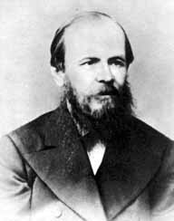

«Мне Бог тебя вручил, чтоб ничего из зачатков и богатств твоей души и твоего сердца не пропало, а напротив, чтоб богато и роскошно взросло и расцвело; Дал мне тебя, чтоб я свои грехи огромные тобою искупил, представив тебя Богу развитой, направленной, сохраненной, спасенной от всего, что низко и дух мертвит...»
«Аня, милая, друг мой, жена моя,прости меня, не называй меня подлецом. Я cдeлaл npeступление, я все проиграл, что ты мне прислала, все, все до последнего крейцера, вчера же .получил и вчера проиграл. Аня, как я буду теперь глядеть на тебя, что скажешь ты про меня теперь! Одно и только одно ужасает меня: что ты скажешь, что подумаешь обо мне? Один твой суд мне и страшен! Можешь ли, будешь ли ты теперь меня уважать! А что и любовь без уважения! Ведь этим весь брак наш поколебался. О, друг мой, не вини меня окончательно!»
«Аня, милая, бесценная моя, я все проиграл, все, все! О, Ангел мой, не печалься и не беспокойся! Будь уверена, что теперь настанет наконец время, когда я буду достоин тебя и не буду более тебя обкрадывать, как скверный, гнусный, вор! Теперь роман, один роман спасет нас, и если б ты знала, как я надеюсь на это! Будь уверена, что я достигну цели и заслужу Твое уважение. Никогда, никогда я не буду больше играть. Точно то же было в 65-м году. Трудно было быть более в гибели, но работа меня вынесла»
«Милый мой ангел Нютя, я все проиграл как приехал, в.полчаса все проиграл. Ну что я скажу тебе теперь, моему .ангелу божьему, которого так мучаю. Прости, Аня, я тебе жизнь отравил! И еще имея Соню! < ... > Пришли мне как можно больше денег. Не для игры (поклялся бы тебе, но не смею, потому что тысячу раз тебе лгал.)»
<... > «И во-первых, знай мой Ангел, что если б не было теперь этого скверного и низкого происшествия, этой траты даром 220 фр.,то, может быть, не было бы и той удивительной, превосходной мысли, которая теперь посетила меня и которая послужит к окончательному общему нашему спасению! < ... >
...милая, подумай в чем наше теперь главное: главное — это успех моего романа! (О, прочь теперь игру, проклятый мираж, ничего не будет подобного никогда более!) Если же роман успеет, — то и все спасено. < ... > Но согласись, согласись, радость моя, что если б не было теперь со мной этого мерзейшего проигрыша, — то я бы не решился на этот шаг, который нас от всего избавит и который я считаю теперь Верным! Господи, да, может быть, еще Бога благодарить надо будет за этот случай, что установил меня теперь окончательно на одной надежде — на работе моей. < ... > Я теперь в такой бодрости, в такой бодрости!»